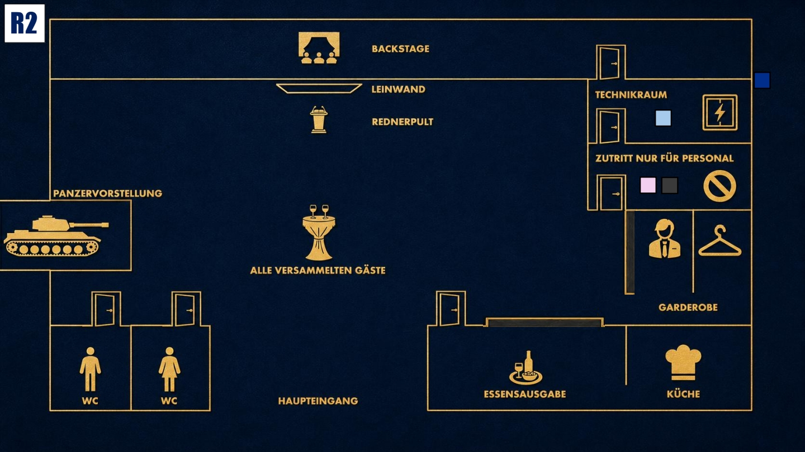

Druck aufbauen
Das Spiel wird intensiver. Nutze neue Informationen klug und bringe andere in Erklärungsnot.

Das Ziel der zweiten Runde
Finde heraus, wer den Blackout wirklich wollte und wofür er genutzt werden sollte. Beobachte besonders Diego und alle Personen, die sich auffällig für Technik, Ablauf oder den Blackout interessieren. Versuche gleichzeitig, jeden Verdacht von dir und deiner technischen Verantwortung wegzulenken.
Deine Ausgangslage
Seit dem Blackout stehst du unter Druck. Nach außen behauptest du, es sei ein technisches Problem oder ein missverstandenes Showelement gewesen. Innerlich weißt du: Der Blackout war gewollt. Du hast eine anonyme Drohung erhalten und dich darauf eingelassen, ohne zu wissen, wofür die Dunkelheit genutzt werden sollte. Jetzt ist Cole tot und du fürchtest, dass der Verdacht auf dich fällt.
Dein Beweis
Zu Beginn der zweiten Runde öffnest du deine Beweiskarte. Lege sie auf den Tisch und lese sie vor. Erkläre, dass der Füller dir gehört. Du verstehst jedoch nicht, wie der Füller am Tatort oder bei einer anderen Person gelandet sein konnte.
Deine Geheimnisse
1. Die anonyme Drohung: Du hast eine anonyme Drohung erhalten: „60 Sekunden Dunkelheit um 19:40 Uhr, oder deine Karriere endet heute.“ Gleichzeitig wurden dir 10.000 Euro angeboten, wenn du den Blackout möglich machst. Die Nachricht war nur einmal sichtbar und ist nicht mehr auf deinem Handy.
2. Die Belohnung: Du hast kurz überlegt, den Auftrag nicht auszuführen und dich herauszuhalten. Doch der Belohnung in Höhe von 10.000 Euro konntest du nicht widerstehen.
Deine Mission
1. Verdacht auf andere lenken: Deute an, dass jemand mit internem Zugang zur Regie oder zum technischen Bereich den Blackout vorbereitet oder ausgenutzt haben muss. Stelle infrage, wer überhaupt genug Wissen über Ablauf, Räume und Timing hatte.
2. Diego testen: Finde heraus, ob Diego mehr über den Blackout weiß, als er zugibt. Beobachte, ob er dich schützen, kontrollieren oder belasten will.
Deine Erinnerung an 19:00 Uhr

Zum Vergrößern tippen
Du arbeitest im Technikraum und bereitest alles für die Präsentation vor. Vor dem Fenster glaubst du, eine Person gesehen zu haben, erkennst aber nicht, wer es war. Du weißt außerdem, dass Jake und Luisa im Mitarbeiterraum sind.
Mögliche Fragen
An Diego: „Diego, du warst doch für Sicherheit und Kontrolle hier. Warst du vorhin zufällig in einem Bereich, der eigentlich nicht für Gäste gedacht war?“
An die Runde: „Findet ihr nicht auch, dass alle viel zu schnell auf die Technik schauen? Die spannendere Frage ist doch, wer diese 60 Sekunden wirklich gebraucht hat.“